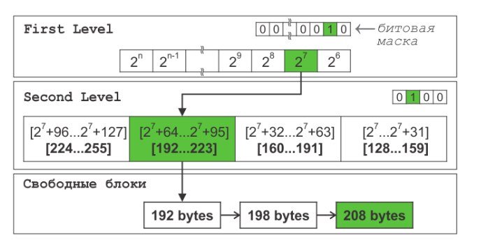

Давным-давно, когда с ездовым котом приключилась «записка шестая», а знания об аллокаторах и опыт их применения ограничивались линейным и системным, мою команду перебросили в помощь другой команде, которая занималась системами навигации больших судов. Ездовые коты, особенно нестарые, — это такие создания, которые редко изучают документацию детально, а чаще бегло читают про интерфейсы систем в проекте, malloc, new, системные аллокаторы и думают, что теперь-то точно понятно, как всё устроено. А потом приходит работа и такая: «Забудь всё, что ты знал. Ты не дочитал до страницы восемьсот что-то там РД — тут есть свой аллокатор, и он реально плохой».
Примерно так началось моё погружение в мир ненормального распределения памяти. Это сейчас я знаю с десяток разных аллокаторов и специфику их работы — специфика, правда, больше игровая, но думаю, многим будет интересно, зачем нужны все эти «танцы с аллокаторами». В той статье все аллокаторы ещё более-менее нормальные, но есть ещё и ненормальные — и они, оказывается, тоже нужны, а в определённых сферах разработки очень даже важны и применяются.
А вот почему нужны и важны ненормальные — объяснений почти нет, как и самих реализаций в открытом доступе. В этой статье я расскажу, какие ненормальные алгоритмы распределения памяти мне повстречались, чем они живут, кого едят, и почему иногда malloc делает вид, что он не при делах, — и да, malloc может возвращать null, и ту проверку мы убрали зря.
Чтобы понять, как устроен аллокатор, можно представить его как небольшую систему управления памятью внутри программы. Он отвечает за то, чтобы выделять, отдавать, освобождать и при необходимости полностью уничтожать области памяти. Обычно можно выделить пять базовых операций, которыми описывается работа любого аллокатора (хотя не каждый аллокатор обязательно поддерживает их все в явном виде).
create / создание аллокатора
Инициализирует аллокатор: ему выделяется определённый участок памяти — это может быть, например, заранее зарезервированный буфер фиксированного размера или блок, полученный из системного аллокатора (например, через malloc или VirtualAlloc). По сути, аллокатор начинает «жить» внутри этого участка и управлять им самостоятельно, раздавая память по запросу программы. Главная идея в том, что после вызова create аллокатор больше не обращается напрямую к операционной системе. Он работает внутри выделенного ему пространства, что делает выделения памяти быстрее и предсказуемее.
allocate / выделение блока
Используется для запроса памяти из управляемой области: программа сообщает, сколько байт ей нужно, а аллокатор ищет подходящий участок внутри своего пространства и возвращает указатель. В зависимости от типа аллокатора это может быть просто линейное смещение или более сложный поиск подходящего блока. Ключевая особенность — скорость (за этот параметр борются все разработчики); allocate часто работает за O(1), потому что аллокатор знает, как устроена его память, и не нуждается в сложных алгоритмах системных менеджеров памяти.
deallocate / освобождение блока
Делает обратное — освобождает конкретный блок, ранее выделенный через allocate (что тоже не бесплатно). В простых (линейных) аллокаторах эта операция может быть вообще не предусмотрена, и тогда память очищается вся разом при наступлении некоторого события. Освобождение блока не всегда означает физическое стирание данных — иногда просто обновляются внутренние таблицы или флаги.
free / сброс всех выделений
Очищаем все выделенные блоки, но не уничтожаем сам аллокатор и не возвращаем память системе. Фактически это «массовый сброс», после которого снова можно обслуживать новые запросы, начиная с начала своего буфера.
destroy / уничтожение аллокатора
Завершает жизнь аллокатора, освобождает участок памяти, который был выделен ему при создании, и удаляет его внутренние структуры. После вызова destroy пользоваться аллокатором уже нельзя, а все выданные им указатели становятся недействительными.
Всё описанное выше справедливо для всех типов и видов аллокаторов, но вот конкретные цели «ненормальных» аллокаторов часто находятся очень далеко от понимания разработчика, который сталкивается с ними впервые.
Хороший…
Тут скорее уместно сказать «оптимизирующий», но тогда не получилось бы красивого заголовка. При разработке рабочего места вахтенного штурмана, который организует работу навигационной службы и контролирует работу штурманов, один крупный заказчик потребовал использовать свою версию GCC (clang тогда ещё ходил пешком под стол) с возможностью выгрузки статистики по памяти — буквально сколько и какие объекты были созданы, где располагались, когда уничтожались и т.д. В процессе портирования софта на этот форк (а там были не только эти требования, но и ещё часть приколов и расширений, вроде невозможности выделить за раз более 1 Мб памяти) появился кастомный аллокатор с отслеживанием времени жизни объектов.
Он распределял объекты по страницам памяти на основе их прогнозируемого времени жизни, которое собиралось на предыдущих запусках в виде некоего конфига. Например, объекты, существующие всего несколько кадров, помещались в один пул, а долгоживущие — в другой. По ТЗ это «в теории» должно было уменьшать фрагментацию и давать возможность освобождать объекты с похожими сроками существования пакетно (странично): при наступлении некоторого события страницы с короткоживущими объектами предполагалось очищать целиком (не взлетело в реальности).
Зато интеграция с инструментами статистики после запусков позволила автоматически (через конфиг) «обучать» аллокатор предсказывать время жизни на основе реальных данных выполнения, снижая необходимость ручной настройки.
В действительности такой подход показал неплохие результаты при использовании в базе данных АРМ штурмана: памяти оно стало есть действительно меньше, но не в плане ускорения работы. Зато появился отдельный форк аллокатора, который помогал при профилировании утечек, так как каждая страница памяти связана с конкретной категорией времени жизни. В итоге система как аллокатор показала себя посредственно, но дала старт специализированному софту, позволявшему отслеживать утечки памяти в рантайме без значительного снижения производительности. Позже часть наработок этой системы была портирована (уже другой командой) в общий репозиторий clang и позволила сделать сам санитайзер немного быстрее.
Условно, использование ASan приводит к двух- и трёхкратному замедлению работы, а «хороший» замедлял программу не более чем на 10%. Каждая страница памяти получала метаданные с привязкой к категории времени жизни и обеспечивала детальную трассировку утечек, позволяя идентифицировать проблемные области кода с точностью до конкретных функций и модулей. Но необходимость предварительной ручной настройки, сложность внедрения и переделки большой части кода приложений так и оставили эту разработку в стенах одной компании.
В рамках этой же работы велась разработка другого типа аллокатора, нацеленного на имитацию длительного использования программ, потому что время непрерывного функционирования навигационных комплексов составляет недели и месяцы без возможности перезапуска.
АЛЛОКАТОР С ОТСЛЕЖИВАНИЕМ ВРЕМЕНИ ЖИЗНИ
═══════════════════════════════════════════════════════════════════
┌─────────────────────┐
│ НОВЫЙ ОБЪЕКТ │
│ запрос памяти │
└──────────┬──────────┘
▼
┌─────────────────────┐
│ АНАЛИЗ/ПРЕДСКАЗАНИЕ│
│ времени жизни │
|эвристика+статистика │
└──────────┬──────────┘
┌──────────────┼──────────────┐
▼ ▼ ▼
╔═══════════════╗ ╔═══════════════╗ ╔═══════════════╗
║ СТРАНИЦА A ║ ║ СТРАНИЦА B ║ ║ СТРАНИЦА C ║
║ Короткоживущие║ ║ Средний срок ║ ║ Долгоживущие ║
║ (1-3 кадра) ║ ║ (минуты/часы) ║ ║(дни/недели) ║
╠═══════════════╣ ╠═══════════════╣ ╠═══════════════╣
║ [obj][obj][ ] ║ ║ [obj][ ][obj] ║ ║ [obj][obj] ║
║ [obj][ ][ ] ║ ║ [ ][obj][ ] ║ ║ [obj] ║
║ [ ][ ][obj] ║ ║ [obj][obj] ║ ║ [ ][obj] ║
╠───────────────╣ ╠───────────────╣ ╠───────────────╣
║ META: TTL=3 ║ ║ META: TTL=600 ║ ║ META: TTL=∞ ║
║ Категория: 1 ║ ║ Категория: 2 ║ ║ Категория: 3 ║
║ Trace: func_A ║ ║ Trace: func_B ║ ║ Trace: func_C ║
╚═══════════════╝ ╚═══════════════╝ ╚═══════════════╝
▼ ▼ ▼
┌─────────┐ ┌─────────┐ ┌─────────┐
│ ОЧИСТКА │ │ ОЧИСТКА │ │ ОЧИСТКА │
│ целиком │ │ частями │ │ редко │
│ каждый │ │ по мере │ │ по │
│ кадр │ │истечения│ │ запросу │
└─────────┘ └─────────┘ └─────────┘
ОТСЛЕЖИВАНИЕ УТЕЧЕК:
════════════════════
Time N: [A: ████░░] [B: ███░░░] [C: ████░░] ← состояние
Time N+10: [A: ████░░] [B: ████░░] [C: ████░░] ← норма
Time N+50: [A: ████░░] [B: █████░] [C: █████░] ← растет
Time N+99: [A: ████░░] [B: ██████] [C: ██████] УТЕЧКА
▲ ▲
┌───────┴───────────┴────────┐
│ ДЕТАЛЬНАЯ ТРАССИРОВКА B: │
│ • Функция: path_trace() │
│ • Модуль: ppath.cpp:342 │
│ • Ожидалось: 600 сек │
│ • Фактически: ∞ │
└────────────────────────────┘Плохой…
Во время тестирования сложных и долго работающих систем, как софт из предыдущей части, возникает необходимость «доказать» стабильность системы на длинных сроках использования — что вообще-то практически нереализуемо на этапе разработки (ну какое долгосрочное тестирование, если апдейты прилетают каждый день). Добавьте сюда трудности с выявлением ошибок управления памятью, которые проявляются крайне редко — иногда лишь спустя дни или недели непрерывной реальной работы. У компании было несколько полнофункциональных рабочих стендов, максимально приближенных к условиям и данным судна, где софт, что называется, «жил» по реальным записям с судов, но их было всего три, и очередь на то, чтобы пропихнуть туда тестирование своего модуля, была расписана на месяц вперёд.
Чтобы как-то ускорить обнаружение такого рода ошибок, был разработан отдельный вид аллокатора — рандомизирующий (chaos), представляющий собой специализированную систему управления памятью, созданную для поиска ошибок, связанных с длительным использованием программ.
В отличие от «хороших» аллокаторов, где разработчик стремится к стабильности размещения объектов для оптимизации кеша и предсказуемости выборки данных, этот аллокатор действует прямо противоположным образом — намеренно нарушает стабильность адресного пространства. При каждой новой аллокации система может случайным образом перемещать уже существующие объекты в произвольные области памяти, создавая условия, близкие к непредсказуемым. Ну, не при каждой, конечно, — это самый жёсткий случай, а при наступлении некоторого события и таймера. Что, конечно, помогает относительно быстро (по сравнению с обычной разработкой) выявлять участки кода, которые полагаются на неизменность адресов, — один из типичных источников трудноуловимых ошибок.
Чтобы подобное перемещение не приводило к нарушению работы программы, аллокатор использует внутреннюю таблицу трансляции адресов — разновидность дескрипторов. Она сопоставляет «логические» адреса, с которыми работает приложение, и реальные физические адреса в памяти. Благодаря этому объекты могут свободно перемещаться, а корректно написанный код продолжает работать, не замечая изменений. Программа, как обычно, «думает», что данные находятся на прежнем месте, хотя на самом деле они уже были перемещены в другую часть памяти.
Применение такого подхода позволяло выявлять ряд ошибок на ранних стадиях, которые в обычных условиях проявились бы только после длительной работы. В одном случае приложение, полагавшееся на стабильность адресов, стало аварийно завершаться уже через несколько часов после включения агрессивной рандомизации адресов, хотя без неё аналогичные сбои происходили лишь спустя недели — и, скорее всего, уже на оборудовании заказчика, т.е. где-то в море, а вытащить оттуда дампы практически нереально, и это грозило серьёзным окриком от начальства и некоторыми финансовыми проблемами. Для избежания разного рода проблем на судне всегда крутится 2, а то и больше резервных инстансов каждого АРМ, работающих параллельно, чтобы в случае чего просто переключиться на живой, если вдруг один отвалился; такое бывало, но очень-очень редко.
В другом случае, в модуле навигации, работающем с многопоточными запросами к базе данных, удалось обнаружить гонки по данным. Один поток кэшировал адрес структуры, а другой инициировал её перемещение, что приводило к повреждению данных и ошибке позиционирования судна. При анализе и долгом разборе пришли к выводу, что подобная ситуация не могла бы случиться на реальном железе и, скорее всего, была эффектом самого подхода в аллокаторе, — но прецедент был, и такой код починили. Повторюсь: в реальных условиях эта ошибка могла случиться одна на пару миллиардов обращений к БД (что в среднем превышало в три раза это количество за один рейс), но ценой такой ошибки было бы смещение точки судна на несколько десятков метров от его реальной позиции.
Такой аллокатор можно рассматривать как стресс-тестер для подсистем памяти: он моделирует непредсказуемое поведение среды и помогает выявлять ошибки, зависящие от времени и порядка выполнения операций, позволяя заранее проверить устойчивость архитектуры к фрагментации, случайным сбоям и некорректным обращениям. Надо сказать, что после запуска тестов на таком аллокаторе очень много нашего тогдашнего софта «посыпалось», что привело к раздаче большого числа тасок разным подразделениям и в целом к пересмотру подхода к работе с памятью.
Цветной…
Немного расскажу об очень специализированном аллокаторе, который вы, скорее всего, не встретите в обычной жизни и никогда не будете использовать. Обычно это либо внутренняя разработка-исследование студии, направленная на поиск ошибок, дебажные сборки и внутренние тулы. Их ещё иногда показывают на GDC в секции «а смотрите, какую штуку мы нафигачили». Такие вещи нацелены уже не на производительность, а решают свои узкоспециальные задачи.
«Цветной» аллокатор вводит концепцию «цветов памяти», чтобы жёстко разграничить данные разных подсистем. Каждое выделение сопровождается тегом цвета (RED, BLUE, GREEN и т.д.), и аллокатор поддерживает внутреннюю таблицу сопоставлений страниц памяти цветам. Операции между разными цветами запрещены на уровне отладочного режима, и аллокатор предоставляет собственные функции memset, memcpy и др.: попытка копирования, перемещения или работы с памятью другого цвета из «цветного компонента» вызывает предупреждение, запись в лог либо сообщение об ошибке — это помогает находить случаи ошибочного смешивания данных между системами.
В боевом режиме проверка отключена ради лучшей производительности, но в отладочном аллокатор способен отслеживать цвет каждой страницы памяти, предотвращая обращения к памяти «не своего» цвета. Дополнительно иногда делают механизм «цветовых барьеров», когда один цвет может читать другой, но не модифицировать его (полезно для реализации immutable-паттернов или защиты данных потоков).
ColorAllocator alloc;
auto red_data = alloc.allocate<RED>(256);
auto blue_data = alloc.allocate<BLUE>(256);
// Безопасно: работа внутри одного цвета
alloc::memset(red_data, 0, 256);
// Ошибка: попытка скопировать память между цветами
alloc::memcpy(blue_data, red_data, 256); // assert: page color mismatch!Мне довелось работать консультантом с командой Arkane над AI-логикой персонажей в Deathloop, и одной из проблем разработки стала сложность взаимодействия между тасками и потоками: какие-то таски помещались в общую очередь, другие на время становились потоками. Логика игрового мира, система рендера и физика постоянно обращались к общим данным, что приводило к крайне сложным для отладки багам и гонкам данных, которые очень негативно влияли на поведение игровых болванчиков, — а они и так-то «умом не блистали», тут же ещё и периодически откровенно тупили при взаимодействии с игроком и миром.
Не для нужд AI, а в целом для дебага в движке решили внедрить экспериментальный механизм аллокации памяти на основе цветов: каждому потоку присвоили свой цвет. Условно, красный поток отвечал за игровую логику, синий — за рендер, зелёный — за физику, а оттенки задач получались из цвета того потока, который их создавал. Попытка записать данные одного цвета из другого потока вызывала ошибку и выявила просто громадное число проблем синхронизации. Такой цветной аллокатор был сделан на основе TLSF.
Отловили кучу разных проблем, скрытой порчи памяти и всяких несоответствий. Помимо потоков, чуть позже этот механизм применили для изоляции подсистем — и там уже нашли «протечки» данных между рендером и остальным игровым кодом. На тестах обнаружили, что подсистема анимации «случайно» модифицировала данные физики, и это приводило к странным «дёргам и телепортам» персонажей; починили.
Ещё один пример использования был сделан для неизменяемых (immutable) данных. Это мы так думали, что они неизменяемые, а игре было на это просто пофиг. Ресурсы, помеченные как «read-only» (PURPLE), нельзя было менять после старта уровня — там тоже нашли немало багов, чем сильно упростили жизнь отделу QA перед релизом.
┌───────────────┐ ┌──────────────────┐ ┌──────────────────┐
│ RED │ │ BLUE │ │ GREEN │
│ (Game Logic) │ │ (Rendering) │ │ (Physics) │
│---------------│ │------------------│ │------------------│
│ Object A │ │ Vertex Buffer │ │ Collision Map │
│ Object B │ │ Texture Data │ │ Rigid Bodies │
└───────┬───────┘ └────────┬─────────┘ └────────┬─────────┘
│ копирование │ копирование │
│ запрещено V разрешено │
^----------------------V ^-----------------V…и быстрый (TLSF)
В разработке софта нет единого стандарта или алгоритма распределения памяти, одинаково эффективного для всех случаев использования. Игровые движки сильно отличаются от обычных приложений по шаблонам использования памяти: им нужна предсказуемая производительность (тут они ближе к РТОС), минимальные задержки при аллокации (тут мы заимствуем часть от встроенных систем) и строгий контроль фрагментации памяти (это уже чисто игродевовская хотелка).
Лучше всего по этим трём параметрам подходит алгоритм двухуровневых списков с разделением по размерам (реализацию можно найти тут), который обеспечивает постоянное время операций аллокации и освобождения памяти и низкий уровень фрагментации.
Аллокатор использует стратегию «подходящих блоков» (good fit), выделяя минимальный объём памяти, достаточный для размещения запрашиваемых данных. Это лучше всего подходит к шаблону использования памяти игровыми движками — аллокации происходят в относительно узких диапазонах размеров: игровые объекты, компоненты систем, временные буферы. Этот метод также минимизирует фрагментацию по сравнению с альтернативными стратегиями вроде «первого подходящего блока» (first fit), поскольку фрагментация может привести к невозможности выделить память под большие ресурсы (модели, AI или звуковые файлы) даже при наличии достаточного общего объёма свободной памяти. «Лучший среди доступных» (best fit) лучше минимизирует фрагментацию, но проигрывает по скорости, поэтому эту стратегию выбирают реже (иллюстрация @Serpentine).

TLSF не очищает выделяемую память и не проверяет права доступа к ней, как делают некоторые аллокаторы, что повышает общую производительность. Это оправдано, поскольку игровые движки работают в контролируемой среде, где программисты не рассматриваются как потенциальная угроза безопасности. Инициализация памяти требует дополнительных вычислительных ресурсов, которые лучше потратить на игровую логику, рендеринг и обработку игровых систем, а ответственность за корректную инициализацию данных лежит на самом разработчике. Зато он очень быстрый — ниже в таблице показано количество циклов процессора (*), которое требуется для одной аллокации в разных реализациях.
Size | malloc (std, win) | malloc (std, win) | DL’s malloc* | Binary Buddy* | TLSF* |
|---|---|---|---|---|---|
128 | 25636 | 112566 | 7376 | 4140 | 155 |
243 | 22124 | 91216 | 5660 | 4448 | 168 |
512 | 15974 | 82162 | 5445 | 4248 | 159 |
4097 | 14743 | 65661 | 3346 | 4135 | 162 |
…заключение
Знаете, что я заметил за время работы над играми? Куча памяти, которую мы выделяем, живёт всего один кадр. Серьёзно, всего один кадр! Рождается, проживает свои 16–33 миллисекунды и умирает. Но даже в этом случае универсального ответа на вопрос «какой аллокатор лучше» не существует — всё зависит только от конкретной задачи.
Может показаться старомодным, но я часто беру бумагу и карандаш (да-да, у нас тут двадцать первый век на дворе, поэтому карандаш) и рисую, откуда приходит память и куда потом уходит. Или медитирую над профайлером использования памяти — многие смеются, пока не увидят результат. Звучит странно, но такая медитация и правда помогает понять, как система создаёт и использует данные, так что никогда не рано начать думать о памяти. Когда бы вы ни начали об этом задумываться, всё равно будете жалеть, что не сделали этого ещё раньше — проверено на собственном горьком опыте!